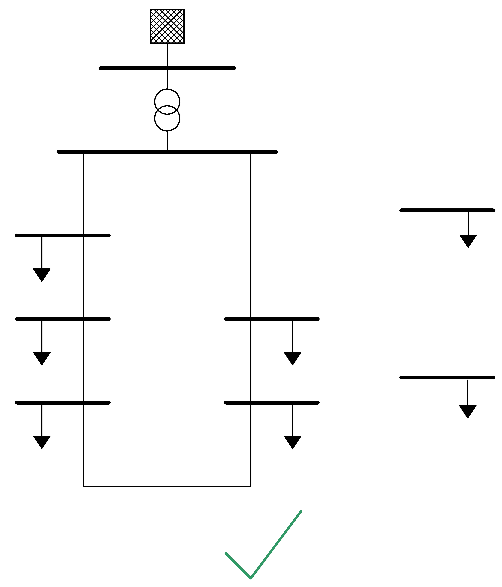

Known Problems and Caveats¶
Disconnected Buses¶
It is possible to have multiple galvanically seperated network in one pandapower network:

However, if there are in service buses that are not connected to any slack bus, the loadflow will not converge:

The only exception are buses which are not connected to any branch. These buses are ignored in the loadflow and therefore do not cause convergence problems:
{kind=link}
The reason is that buses which are not connected to any branch can be easily identified, while buses which form an isolated group can only be found with a topology search. The pandapower topology package includes a function to find disconnected buses. For the loadflow to converge, they have to be set out of service:
import pandapower.topology as topology
unsupplied_buses = top.unsupplied_buses(net)
net.bus.loc[unsupplied_buses, "in_service"] = False
pp.runpp(net)
Voltage Controlling Elements¶
It is generally possible to have several generators and external grids in one network. Buses also might have several bus-elements (ext_grid, load, sgen etc.) connected to them:

It is however not possible to connect multiple voltage controllable element (ext_grid, gen) at one bus, since this would convergence problems in PYPOWER:

The pandapower API will prevent you from adding a second voltage controlling element to a bus, so you should not be able to build the networks pictured above through the pandapower API.
It is also not allowed to add two voltage controlled elements to buses which are connected through a closed bus-bus switch, since those buses are fused internally and therefore the same bus in PYPOWER (see switch model):

Zero Impedance Branches¶
Branches with zero impedance will lead to a non-converging loadflow:

This is due to the fact that the loadflow is based on admittances, which would be infinite for an impedance of zero. The same problem might occur with impedances very close to zero.
Zero impedance branches occur for:
- lines with length_km = 0
- lines with r_ohm_per_km = 0 and x_ohm_per_km = 0
- transformers with vsc_percent=0
If you want to directly connect to buses without voltage drop, use a bus-bus switch.